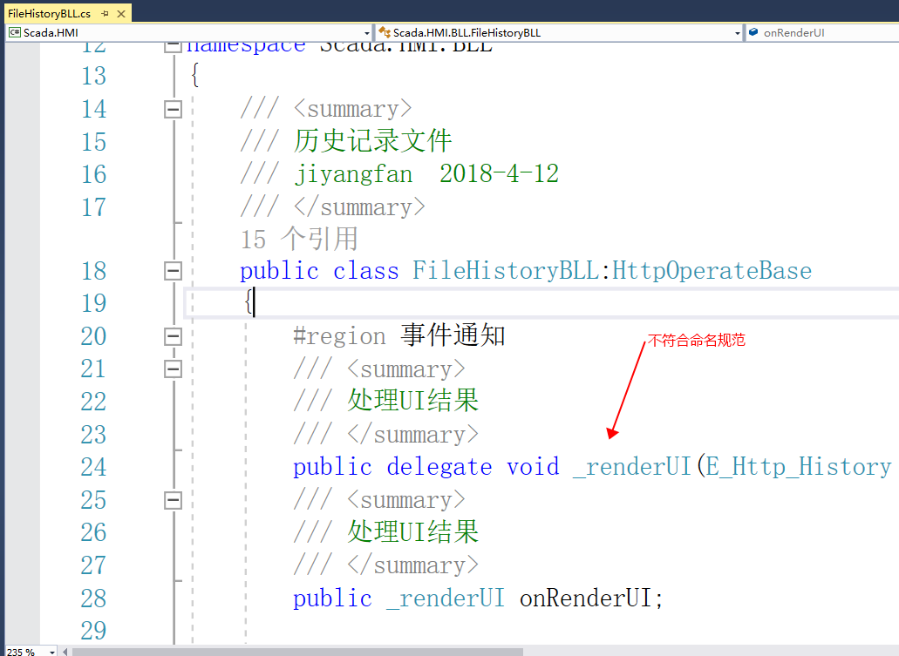

这是我在查看HMI管理器部分代码时发现的一些问题，以及可以简化代码编写，降低代码复杂度的建议。review 2018-08-15
-
命名不规范以及不使用的代码仍然保留
例子：

原因：
- 长期不用的代码，会增加同事阅读和维护的负担，长期以往，这绝对是软件维护的灾难
- 我们有源码控制(SVN,Git)已经提供了历史追踪的功能
-
大量的使用ref关键字
例子：
实现代码如下，使用ref修饰了strList形参
////// 获取历史数据库列表，不包括当前正在使用的历史文件 /// 返回的列表字符串 /// ///public static bool GetHistoryList(string macCode, Dictionary 这是使用代码部分
////// 获取历史文件列表 /// ///返回null 表示获取失败 ; 空字符串表示没有记录 ；非空字符串表示有记录 public string GetFiles(MachineInfo machine) { Dictionary可以看到该部分的实现逻辑是获取文件列表，这个实现部分其实根本就不需要使用ref就能实现，只要将GetHistoryList函数的返回值类型为string，返回的就是历史文件列表字符串，如果不为null或空那么就是有返回值，否则就是没有
原因：
- 加上ref是明确标明是有可能要更改参数值的，并且统一值类型和引用类型的引用传递
- 例子中，本就不需要ref就能实现，加了ref会增加复杂度
-
大量使用委托，而不使用事件进行封装
例子：
////// 获取HMI的版本 /// jiyangfan 2018-4-9 /// public class GetHMIVersionBLL { #region 事件通知 ////// 通知界面更新时间是否成功 /// /// 如果返回true，则返回硬件版本和软件版本，否则返回false /// 软件版本 /// 硬件版本 public delegate void NoticeResultDel(bool isSuccess, string softVersion, string hardwareVersion); ////// 通知界面更新结果 /// public NoticeResultDel NoticeResultDelEvent; #endregion ////// 获取HMI的版本 /// 当前操作的hmi /// public void GetVersion(MachineInfo machineinfo) { Dictionaryif (NoticeResultDelEvent != null) { NoticeResultDelEvent(false, "", ""); }} else { string version = model.version; string hareVersion = model.hardwareVersion; // HwCommon.MsgBox(temp);if (NoticeResultDelEvent != null) { NoticeResultDelEvent(true, version, hareVersion); }} } ////// 获取版本 2018-6-12 add /// /// ///public CloudHmiInfo GetVersion2(MachineInfo machineinfo) { Dictionary 原因：
- 事件是对委托的封装，委托是定义做什么，事件定义什么时候做，这里适合使用事件
执行事件或者委托可以使用简化形式执行
if (NoticeResultDelEvent != null) { NoticeResultDelEvent(false, "", ""); } this.NoticeResultDelEvent?.Invoke(false, "", ""); -
使用LINQ简化查找
例子：
MachineInfo m = null; for (int j = 0; j < _lstMachine.Count; j++) { if (_lstMachine[j].machine_code == macCode) { m = _lstMachine[j]; break; } } if (m == null) { return; }改为使用LINQ查找
MachineInfo info = this._lstMachine.FirstOrDefault(item => item.machine_code == macCode);MachineInfo info = this._lstMachine.FirstOrDefault(item => item.machine_code == macCode);